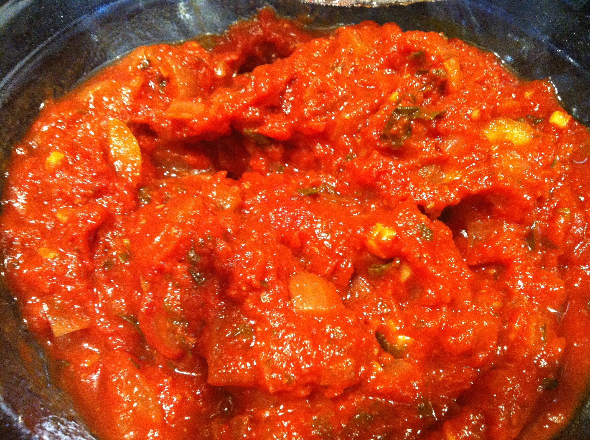

Marinara Sauce

Description
This sauce recipe has been iterated upon since I was a child, and it has gotten better each time.
Below is the latest version of this recipe. I hope you enjoy!
Ingredients
- 1 28oz can crushed tomatoes
- 1 15oz can diced tomatoes
- 1 medium red onion
- 3 cloves crushed garlic
- 1 tablespoon brown sugar
- 1 cup shredded Parmesan/Romano/Pecorino cheese
- 3 tablespoons chopped fresh basil
- 1 teaspoon dried oregano
- 1/2 teaspoon salt
- 2 tablespoons olive oil
Steps
- Add olive oil to sauce pan on medium heat.
- Add diced onions. Cook onion on low/medium heat until opaque, about 4-5 minutes. Add cloves of garlic and let cook 30 seconds or until fragrant.
- Add cans of tomatoes and let cook about 5 minutes or until warm.
- Add rest of ingredients and let simmor 30-60 minutes.